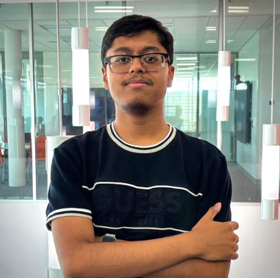
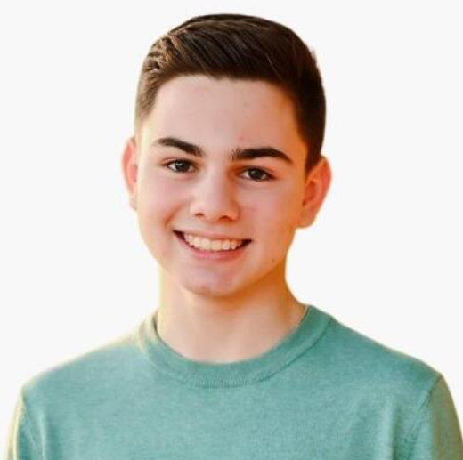
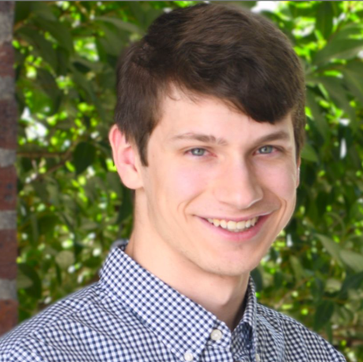
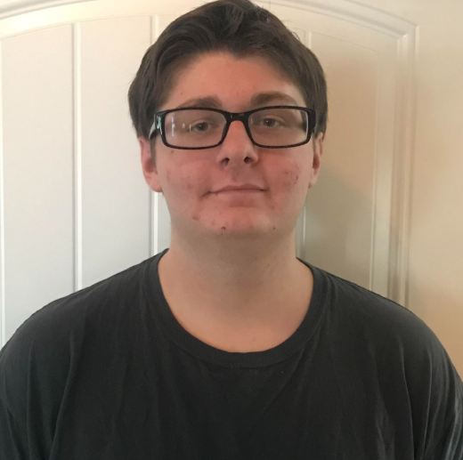

This is where we're hosting our CPSC 4140 semester project.
CPSC 4140 · SEMESTER PROJECTPDFs open in a new tab. Milestones 1 and 2 are available; Milestones 3 and 4 currently contain placeholder documents.
Team Members

Miller Hendricks

Ford Scott
